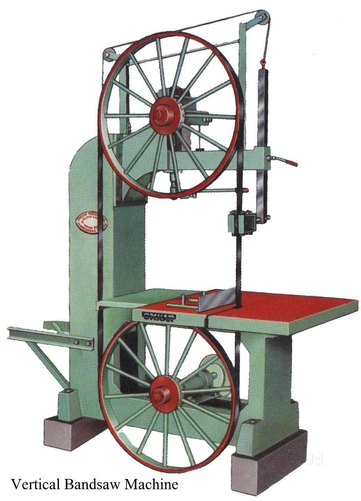

Our company Prakash Saw Mill was established in the year 1978 at Sindewahi, Dist. Chandrapur (MS). We Prakash Saw mill is sole Proprietorship based firm, engaged as in Teak Wood Cutting, the manufacturer of Doors and Windows and Teak Wood Plank Manufacturers, Wood Log and many more. Also we deal with traditional furniture like Sofa, beds and dining tables etc. We have a team of professionals who execute the wood cutting service and deliver quality product and low waste. Clients can avail the provided Wood Logs from us at very reasonable prices in various sizes, lengths and thicknesses.
What makes us stand out?
Big or small, we treat your work like our own. You can trust our knowledgeable, professional staff to help you through every step you take towards making your vision a reality. And you can shop at Prakash Saw Mill,Sindewahi with complete confidence. We promise excellent service and competitive prices backed by our Price Match Guarantee.
The founders of our company are well-experienced in the furniture and wood trading business. Their expertise in this field has allowed the good wood cutting service and home furniture manufacture at chandrapur district. Our team of experienced workmen crafts the best quality furniture.
It is our goal to continuously strive to achieve quality by exceeding customer expectations and focus on understanding and fulfilling client requirements have helped us to achieve our target of developing loyal customers.
We are offering teak wood in various sizes, shapes and other specifications. In addition to this, we offered Doors, Windows, Design Doors and Traditional furniture like Sofa, beds and dining tables etc.